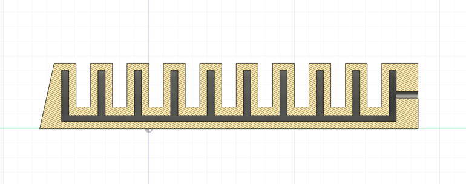
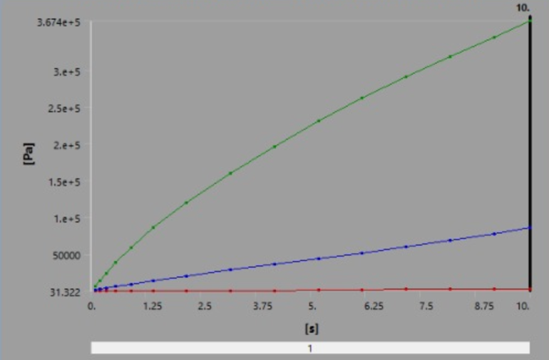
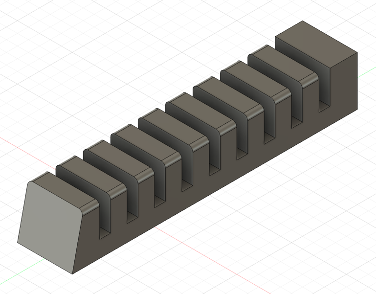
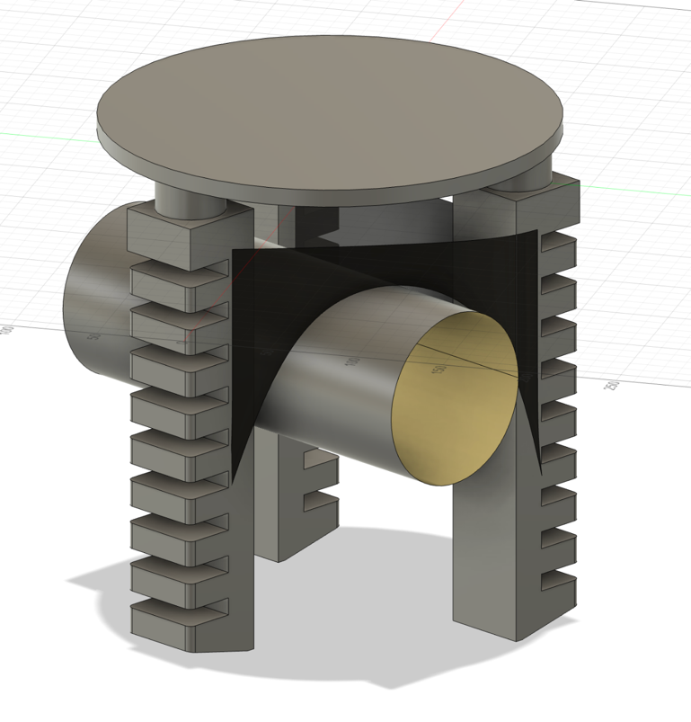
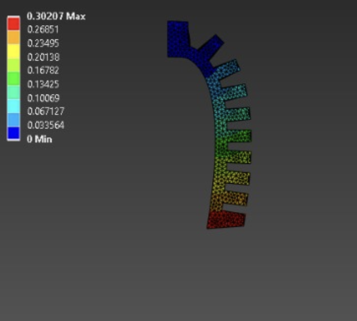
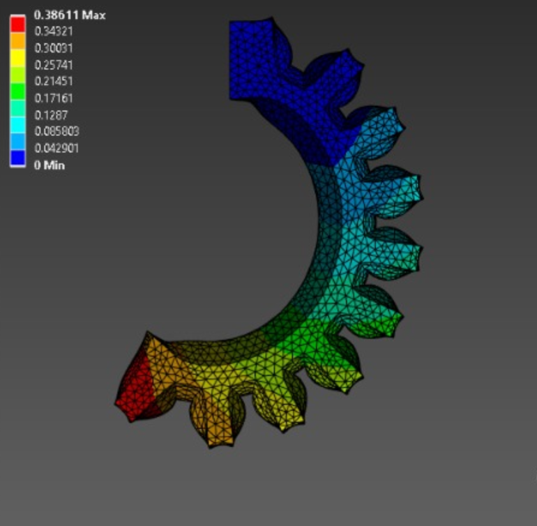

Soft Robotics · Industrial Manipulation
Pneumatic Soft Gripper for KUKA KR16
A pneumatic soft robotic gripper concept for gentle object handling, designed in Fusion 360 and analyzed with ANSYS FEA.

Problem
Food handling and delicate manipulation require compliant grippers that can adapt to shape variations without damaging objects.
Role
Soft robotics researcher
Jan 2023 – Apr 2023
My Contribution
- Designed a soft pneumatic gripper concept with rotatable fingers and web-like membrane support.
- Created CAD models in Fusion 360.
- Performed ANSYS finite element analysis using hyperelastic material modeling.
- Studied deformation, von Mises stress, and equivalent elastic strain under pressure.
System Architecture
- Pneumatic soft actuator geometry
- CAD model
- Hyperelastic material setup
- FEA boundary conditions and pressure input
- Deformation and stress analysis
Results
- Analyzed a 10-chamber soft gripper design.
- Reported maximum deformation trends under pressure.
- Connected soft gripper design to KUKA KR16 manipulation applications.
Why it matters
This project connects core robotics engineering skills—sensing, modeling, control, simulation, and integration—with the type of systems thinking needed for autonomous and humanoid robots.
Gallery




